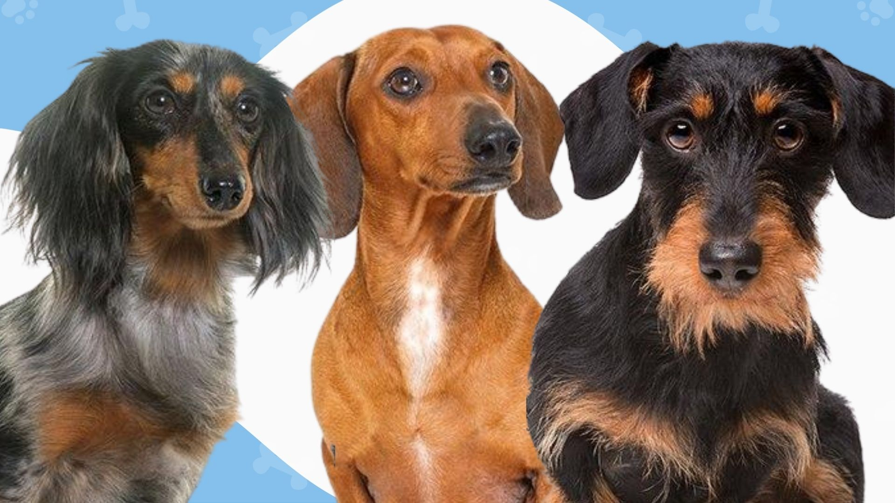
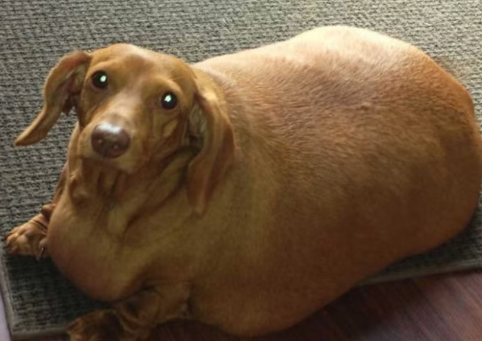

Types of Dachshunds
Dachshunds come in all different shapes and sizes and there are two attributes that vary across all sausage dogs. These include the size and the coat type of each Dachshund.
These differences include:

- Size
- Standard
- Miniature
- Hair Type
- Smooth
- Wired
- long
Source: Alpha Paw, April 2022
Dennis' Weight-loss Journey

Source: Rose Troup Buchanan, The Independent, March 2015
Dennis' old owner was abusive and overfed him. But new owner Brooke Burton was nurturing and encouraged him to lose weight. After starting a strict diet and exercise routine, Dennis was able to lose 75% of his body weight and become a happy and healthy wiener. This shows how critical it is to help your dog maintain its weight and not fall into obesity like our old friend Dennis.